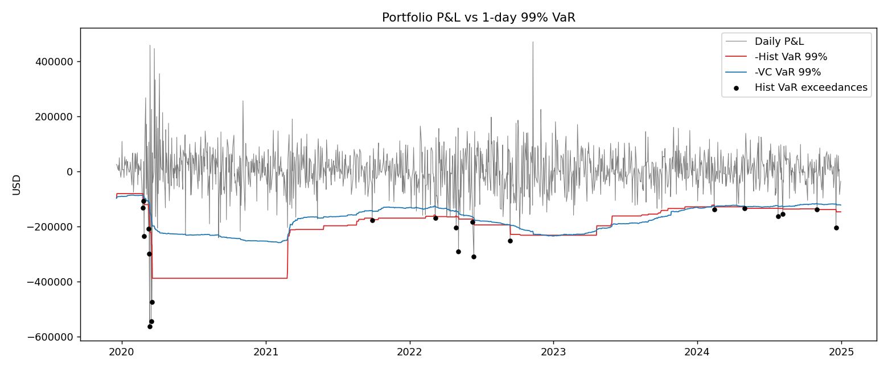

Daily Market Risk Report - 30 Dec 2024
Day P&L: -35,522 USD | Hist VaR limit: 262,000.0 USD |
Utilisation: 56% | Status: OK |
VaR exceedance today: No
VaR / ES
|
Hist |
Var-Cov |
| VaR 99% (1d) |
146631.0 |
121835.0 |
| ES 99% (1d) |
173800.0 |
140191.0 |
Bond PV01
|
PV01 (USD/bp) |
| ^FVX |
445.0 |
| ^TNX |
796.0 |
| ^TYX |
1586.0 |
Backtest
| method |
period |
days |
exceedances |
expected |
basel_zone |
kupiec_LR |
kupiec_p |
kupiec_result |
| Historical |
full sample |
1313 |
21 |
13.1 |
Yellow |
4.03 |
0.045 |
Reject |
| Historical |
last 250 days |
250 |
6 |
2.5 |
Yellow |
3.56 |
0.059 |
Accept |
| Variance-Covariance |
full sample |
1313 |
33 |
13.1 |
Red |
21.39 |
0.000 |
Reject |
| Variance-Covariance |
last 250 days |
250 |
6 |
2.5 |
Yellow |
3.56 |
0.059 |
Accept |
Stress scenarios
| scenario |
pnl_usd |
| Rates +100bp parallel |
-282699 |
| Equities -10% (5 positions) |
-500000 |
| EURUSD & USDINR -5% |
-100000 |
| COVID crash (9-23 Mar 2020) | worst day -561,831 |
-1266119 |
| 2022 rate shock (Jan-Oct 2022) | worst day -309,875 |
-2576002 |
